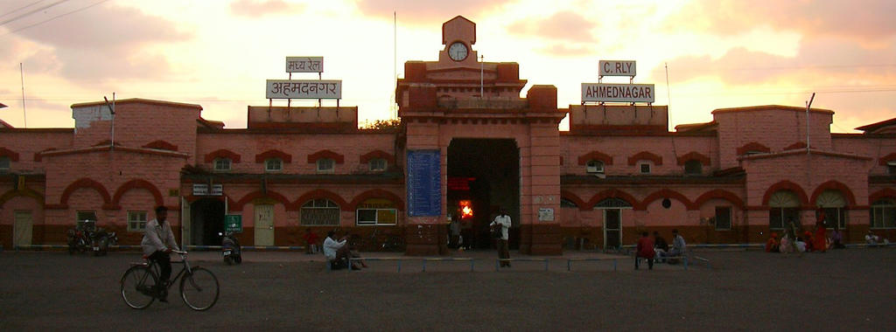
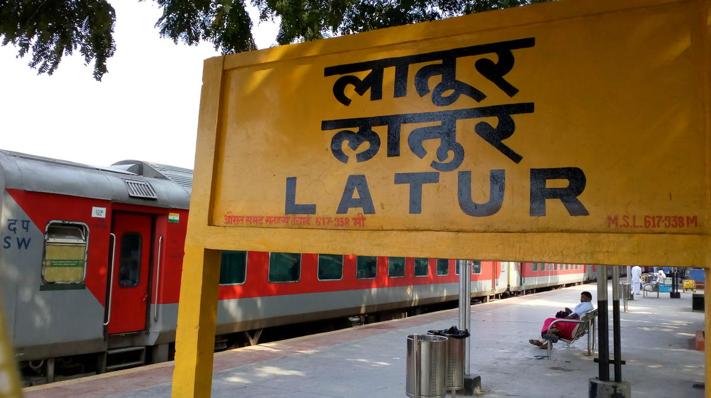

Pune
Pune, also called Poona, city, west-central Maharashtra state, western India, at the junction of the Mula and Mutha rivers.
Called “Queen of the Deccan,” Pune is the cultural capital of
the Maratha peoples. The city first gained importance as the
capital of the Bhonsle Marathas in the 17th century.

Mumbai
What is unique about Mumbai? Image result for mumbai famous things What is unique about Mumbai? Mumbai is the first city in India to operate trains.
Carrying an incredible 2.2 billion passengers a year, Mumbai's railway system is also the world's
busiest train network.
Mumbai also has the most obsolete electric railway line in India, which was installed in 1925.

Ahmednagar
Ahmednagar , the largest district in the State. It is home to 19 sugar factories and is also the birthplace of the cooperative movement.
Sugar, milk and bank cooperatives flourish here. Exactly 100 years ago, a great visionary was born in
deep into the heartland of Maharashtra.

Latur
The city is a tourist hub surrounded by many historical monuments, including Udgir Fort and Kharosa Caves. The people in Latur are called Laturkar.
The most spoken language in Latur is Marathi. The city's quality of education attracts students from all
over Maharashtra.